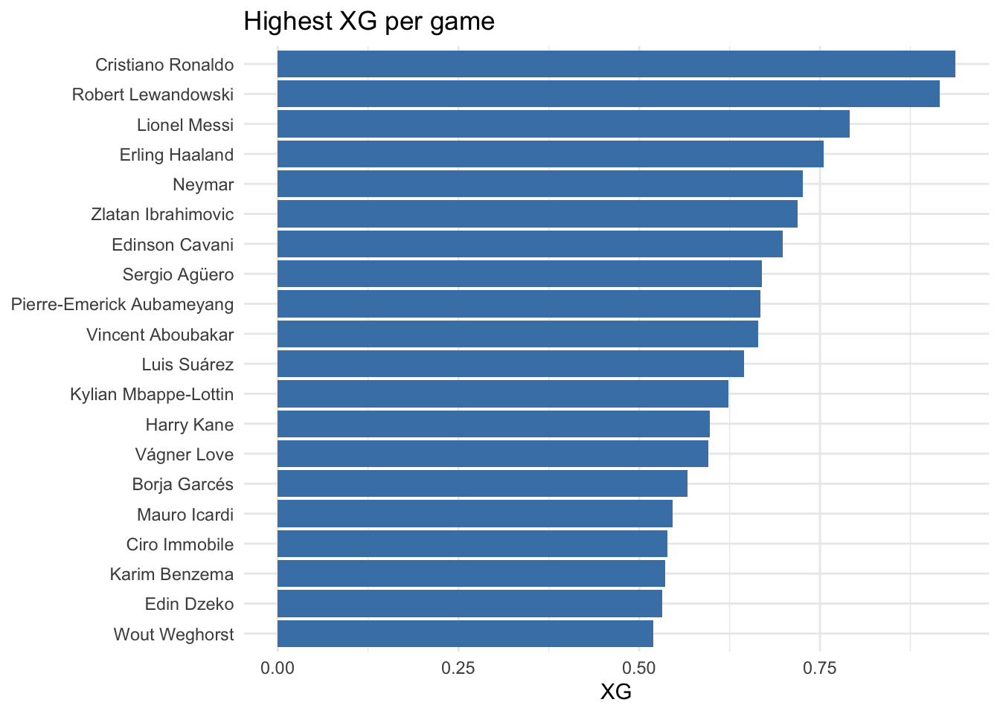
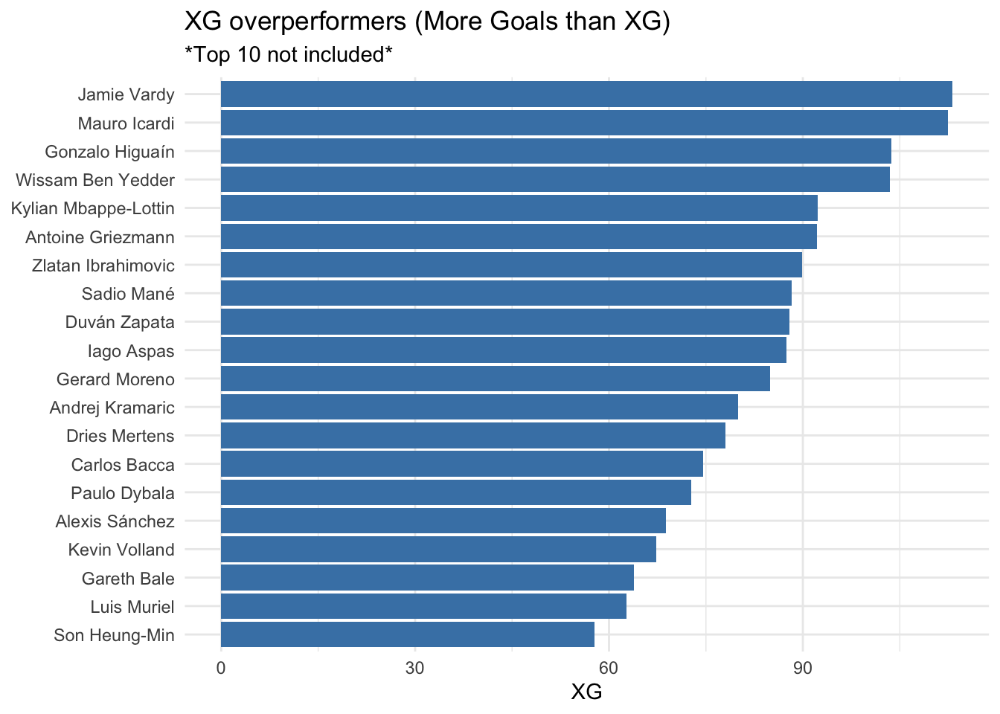
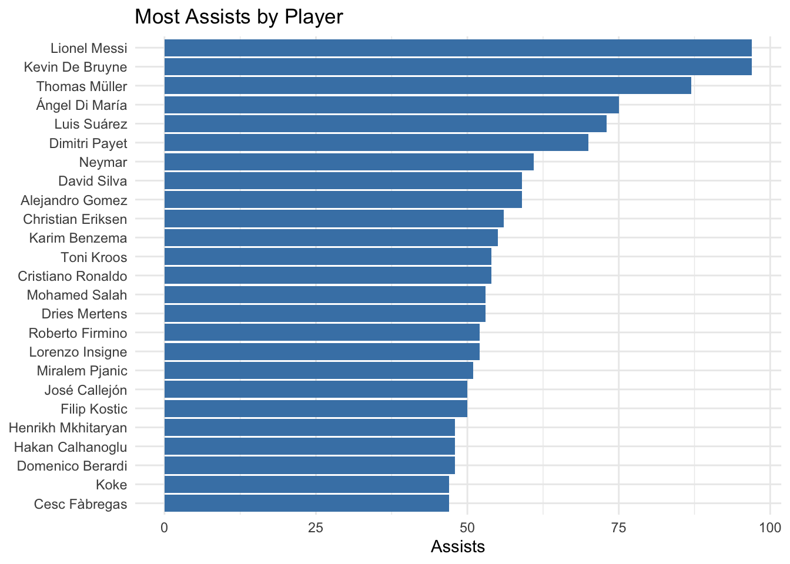
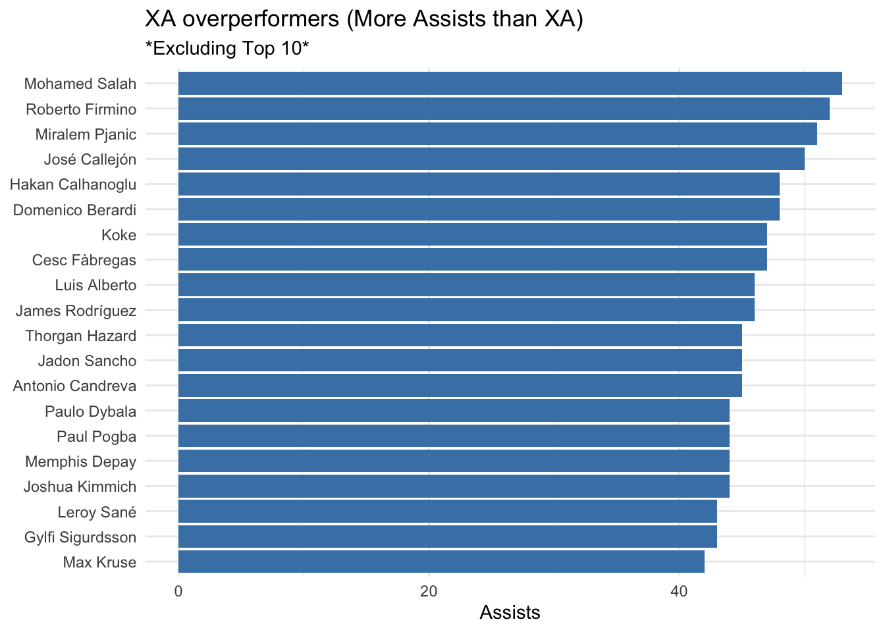
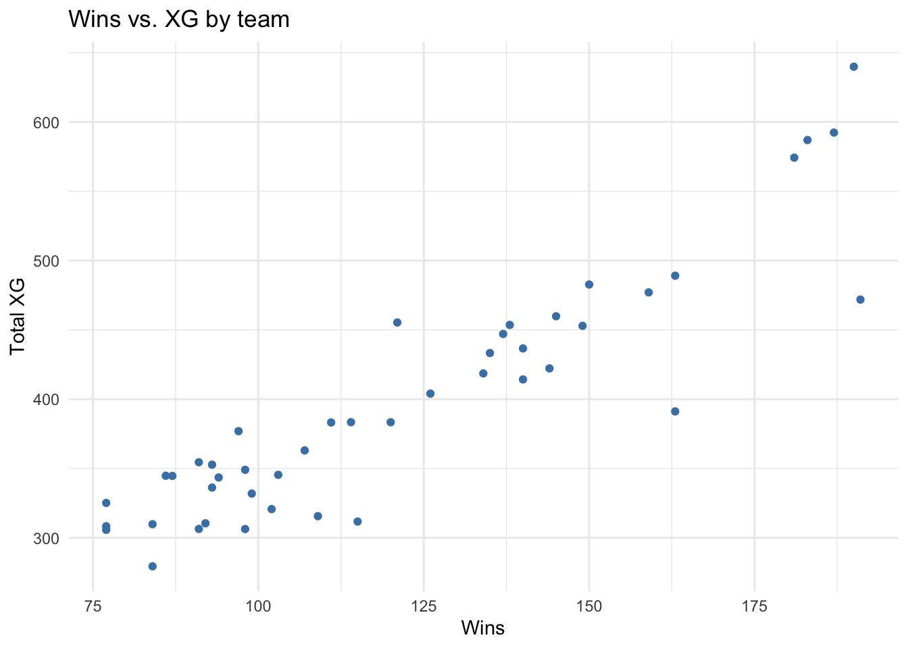
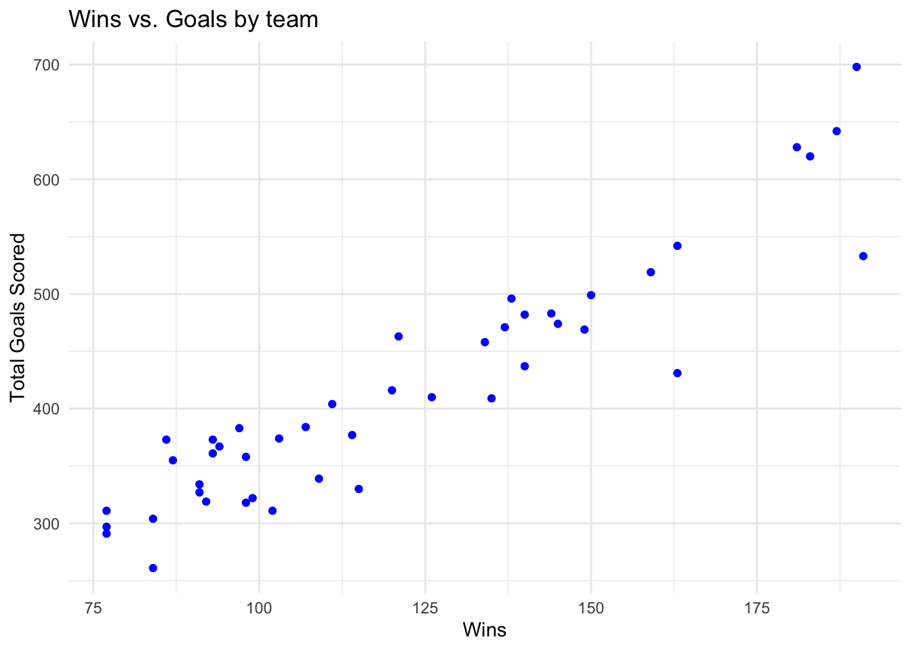
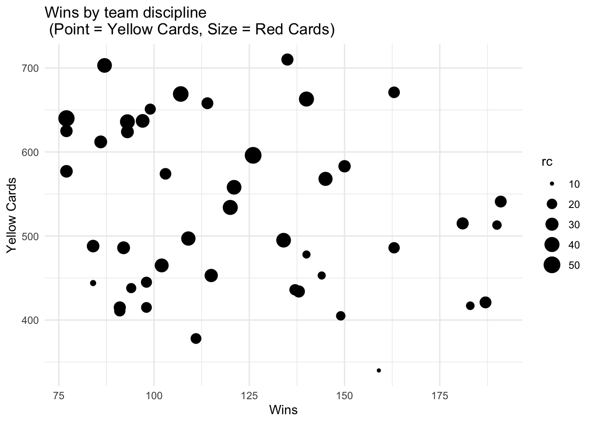
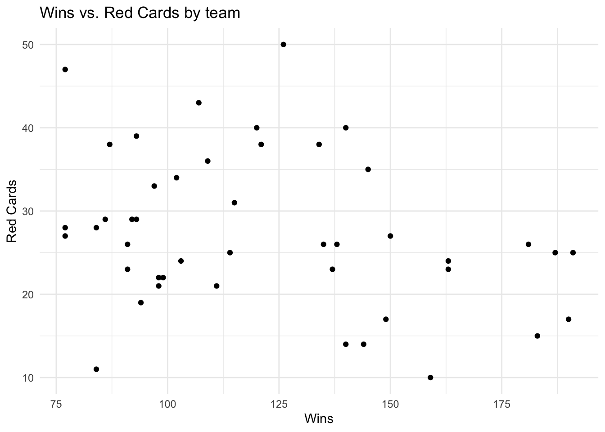
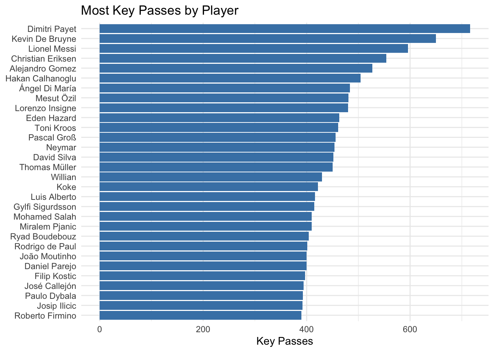

library(ggplot2)
library(RMariaDB)
football <- dbConnect(MariaDB(),
user='stat286',
password='Cougars24!',
dbname='football',
host='statdb.byu.edu',
bigint = 'numeric')Brighton Allen | Stat 286 | Dr. Perrett
Football Scouting Project
Libraries and Database
Import Tables
appearances <- dbReadTable(football, "appearances")
games <- dbReadTable(football, "games")
leagues <- dbReadTable(football, "leagues")
players <- dbReadTable(football, "players")
shots <- dbReadTable(football, "shots")
teams <- dbReadTable(football, "teams")
teamstats <- dbReadTable(football, "teamstats")Which players have the highest expected goals on average?
max_avg_xg <- dbGetQuery(football, "select players.name, avg(xGoals) as xgpg
from appearances
join players on players.playerID = appearances.playerID
group by players.name
order by xgpg desc limit 20")
xg_overperformers <- dbGetQuery(football, "select p.name,
sum(a.xGoals) as xg,
sum(a.goals) as goals
from appearances as a
join players as p
on p.playerID = a.playerID
group by p.name
having goals > xg
order by goals desc limit 20 offset 10")
ggplot(max_avg_xg, aes(x = xgpg, y = reorder(name, xgpg))) +
geom_col(fill = "steelblue") +
labs(title = "Highest XG per game",
x = "XG",
y = NULL) +
theme_minimal()
ggplot(xg_overperformers, aes(x = xg, y = reorder(name, xg))) +
geom_col(fill = "steelblue") +
labs(title = "XG overperformers (More Goals than XG)",
subtitle = "*Top 10 not included*",
x = "XG",
y = NULL) +
theme_minimal()
Which players have the most assists?
top_assists <- dbGetQuery(football, "select p.name, sum(a.assists) as assists,
sum(a.xAssists) as xa
from appearances as a
join players as p
on p.playerID = a.playerID
group by p.name
order by assists desc limit 25")
ast_overperformers <- dbGetQuery(football, "select p.name,
sum(a.assists) as assists,
sum(a.xAssists) as xa
from appearances as a
join players as p
on p.playerID = a.playerID
group by p.name
having assists > xa
order by assists desc limit 20 offset 10")
ggplot(top_assists, aes(x = assists, y = reorder(name, assists))) +
geom_col(fill = "steelblue") +
labs(title = "Most Assists by Player",
x = "Assists",
y = NULL) +
theme_minimal()
ggplot(ast_overperformers, aes(x = assists, y = reorder(name, assists))) +
geom_col(fill = "steelblue") +
labs(title = "XA overperformers (More Assists than XA)",
subtitle = "*Excluding Top 10*",
x = "Assists",
y = NULL) +
theme_minimal()
What factors contribute to overall team success? - discipline - reds and yellows? - quality shots (xg)? - goals?
#comparisons
#wins vs xg (teams with over 250 games?)
wins_v_xg <- dbGetQuery(football, "select t.name, count(ts.gameID) as games,
sum(xGoals) as xg, sum(case when ts.result = 'W' then 1 else 0 end) as wins
from teamstats as ts
join teams as t
on t.teamID = ts.teamID
group by t.name
having games > 250
order by games, wins, xg")
ggplot(wins_v_xg, aes(x = wins, y = xg)) +
geom_point(color = "steelblue") +
labs(title = "Wins vs. XG by team",
x = "Wins",
y = "Total XG") +
theme_minimal()
#wins vs goals (teams with over 250 games)
wins_v_g <- dbGetQuery(football, "select t.name, count(ts.gameID) as games,
sum(goals) as goals, sum(case when ts.result = 'W' then 1 else 0 end) as wins
from teamstats as ts
join teams as t
on t.teamID = ts.teamID
group by t.name
having games > 250
order by games, wins, goals")
ggplot(wins_v_g, aes(x = wins, y = goals)) +
geom_point(color = "blue") +
labs(title = "Wins vs. Goals by team",
x = "Wins",
y = "Total Goals Scored") +
theme_minimal()
#wins vs discipline (>250 games)
wins_v_discipline <- dbGetQuery(football, "select t.name, count(ts.gameID) as games,
sum(yellowCards) as yc, sum(redCards) as rc,
sum(case when ts.result = 'W' then 1 else 0 end) as wins
from teamstats as ts
join teams as t
on t.teamID = ts.teamID
group by t.name
having games > 250
order by games, wins, yc, rc")
ggplot(wins_v_discipline, aes(x = wins, y = yc, size = rc)) +
geom_point(color = "black") +
labs(title = "Wins by team discipline \n (Point = Yellow Cards, Size = Red Cards)",
x = "Wins",
y = "Yellow Cards") +
theme_minimal()
ggplot(wins_v_discipline, aes(x = wins, y = rc)) +
geom_point() +
labs(title = "Wins vs. Red Cards by team",
x = "Wins",
y = "Red Cards") +
theme_minimal()
Who makes the most key passes?
key_passes <- dbGetQuery(football, "select p.name, sum(a.keyPasses) as kp
from appearances as a
join players as p
on p.playerID = a.playerID
group by p.name
order by kp desc limit 30")
ggplot(key_passes, aes(x = kp, y = reorder(name, kp))) +
geom_col(fill = "steelblue") +
labs(title = "Most Key Passes by Player",
x = "Key Passes",
y = NULL) +
theme_minimal()